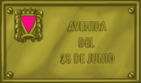

Spazi per la
diversità
28 giugno di 1969:
La rivolta di Stonewall (New York)
Nasce l'orgoglio GLBT
Un fatto di capitale importanza ebbe luogo il 28 di giugno di 1969, un fatto che segna prima un ed un dopo per il collettivo GLBT. Quello giorno, la polizia, seguendo una tradizione di controllo e fustigazione contro transessuali, lesbiche e gays -a dispetto di essere ufficialmente proibite le retate- entrò nel pub Stonewall, una di quelli frequentati per pubblico GLBT, col pretesto di una mancanza in permesso dei padroni per vendere alcool. In quell'epoca la gente non aveva sviluppato una coscienza di opposizione e resistenza a questi abusi e, tuttavia, quello giorno la gente si ribellò. Il risultato furono vari detenuti che finirono in commissariato, mentre un'altra gente protestava nell'esterno del locale. Al giorno dopo si prodursi tumulti in tutta la zona gay della città in protesta per questi avvenimenti. Durante i quattro giorni seguenti, le barricate furono continue ed in settimane successive le azioni continuarono, ostacolando notevolmente alla polizia il controllo della zona. La necessità di organizzare e preparare queste proteste portò alla creazione del Gay Liberation Front (GLF). Nasceva così il movimento moderno.
Dello stesso modo che gli afroamericani si stavano radicalizzando ed alcuni settori abbandonavano la lotta pacifica contro la discriminazione, apparendo gruppi più radicali Le Pantere Nere, transessuali, lesbiche e gays passarono come anche all'offensiva. Improvvisamente, essere gay lasciò di essere un motivo di vergogna interna per trasformarsi in un elemento di orgoglio e l'omosessualità cominciò a rivendicarsi apertamente. La consegna era "uscire", farsi conoscere pubblicamente come gay. Comincia così il periodo del "orgoglio gay" o "gay power" In realtà si stava copiando la formula del "black power" che il movimento nero per i diritti civili sviluppava in quello momento negli Stati Uniti.
 Da quella data -che passò a trasformarsi in un appuntamento rivendicativo mondiale- il movimento GLBT cominciò a percorrere una strada nuova. Nell'ambito occidentale, a poco a poco, si andarono vincendo importanti battaglie alla homophobia legale, medico e sociale. Così, l'omosessualità fu gradualmente depenalizzandosi in tutti i paesi, la demedicalizzazione, che incominciò in USA a partire da 1973, si andò imponendo nell'estamento medico, fino a che l'OMS -Organizzazione Mondiale della Salute- ritirò l'omosessualità del suo catalogo di malattie mentali agli inizi degli anni novanta. Col nuovo millennio, i compagni di gais e di lesbiche sono riconoscenti legalmente nella maggior parte dei paesi, perfino come matrimoni (Olanda, Belgio, Spagna...).
Da quella data -che passò a trasformarsi in un appuntamento rivendicativo mondiale- il movimento GLBT cominciò a percorrere una strada nuova. Nell'ambito occidentale, a poco a poco, si andarono vincendo importanti battaglie alla homophobia legale, medico e sociale. Così, l'omosessualità fu gradualmente depenalizzandosi in tutti i paesi, la demedicalizzazione, che incominciò in USA a partire da 1973, si andò imponendo nell'estamento medico, fino a che l'OMS -Organizzazione Mondiale della Salute- ritirò l'omosessualità del suo catalogo di malattie mentali agli inizi degli anni novanta. Col nuovo millennio, i compagni di gais e di lesbiche sono riconoscenti legalmente nella maggior parte dei paesi, perfino come matrimoni (Olanda, Belgio, Spagna...).
Il 28 giugno è una data storica che segna una pietra miliare nella lotta per la dignità di milioni di lesbici, gays, bisessuali e transessuali e Stonewall è il nome che va intimamente legato a quella lotta. Sono due nomi per l'omaggio, due nomi che vogliamo mantenere vivi nella nostra società e che speriamo di vedere anche nei suoi spazi pubblici.